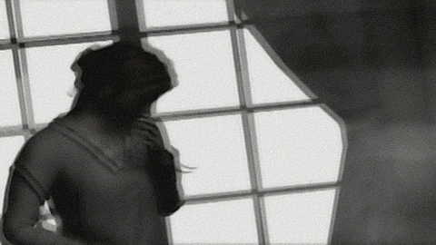

ATENÇÃO
Este conteúdo não é recomendado para menores de 16 anos por conter gráfico visual "perturbador" podendo causar desconforto, medo, ansiedade, tristeza e outras emoções negativas; O criador se isenta de qualquer responsabilidade a partir do momento em que você insiste em assistir.
Nosso Discord já conta com mais de 100 pessoas, desde medrosos, admiradores e curiosos. Em breve, enigmas serão desenvolvidos com participantes da comunidade! Estamos organizando um ambiente agradável para que você possa trocar mensagens sobre os conteúdos postados, desde terror até conversas um tanto quanto sem sentido.

Infelizmente, não podemos concordar com desabafos ou busca por ajuda pessoal. Não temos controle sobre quem te envia mensagens, e isso pode ser prejudicial. Não há nenhum profissional da área participando deste canal; portanto, não recomendamos tal procura por ajuda. Não é maldade da nossa parte; esperamos que entenda que, na internet, uma pessoa pode ser qualquer coisa e nem todos são anjos.
Entrar
 Instagram
Instagram